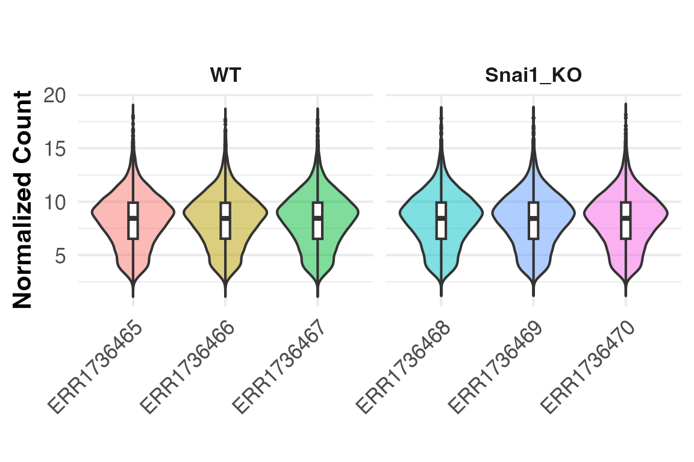
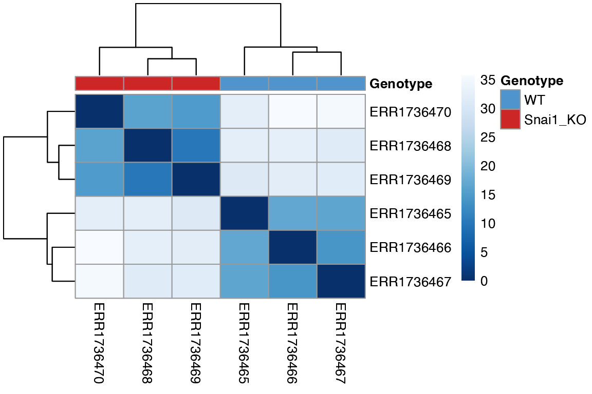
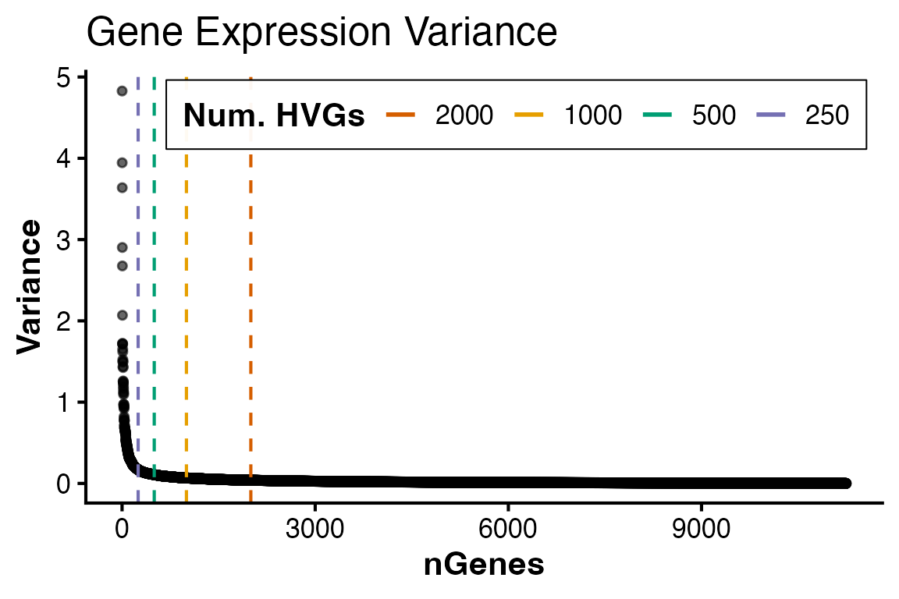
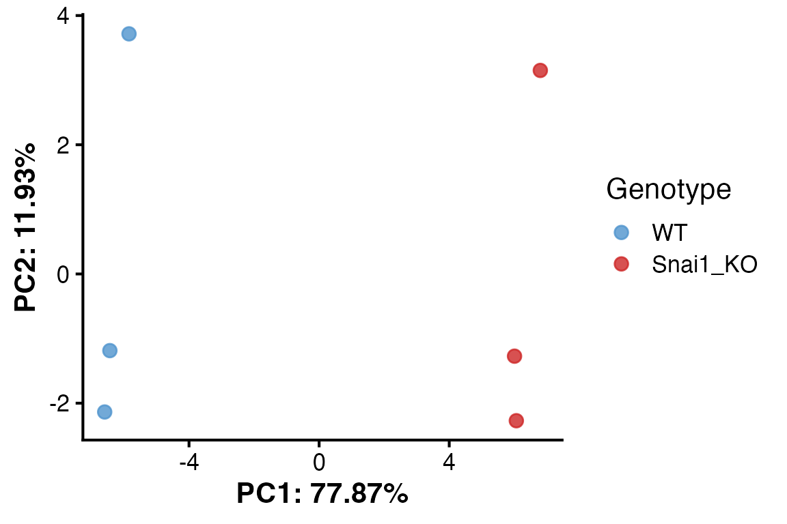
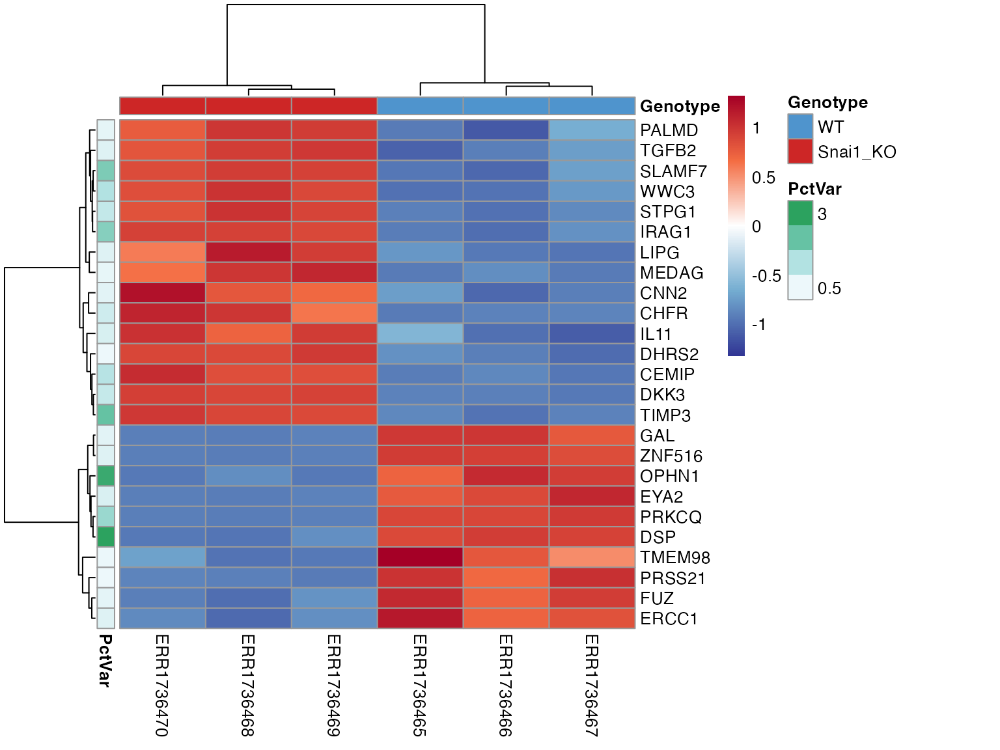
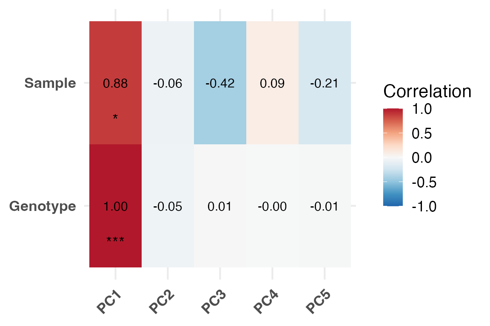
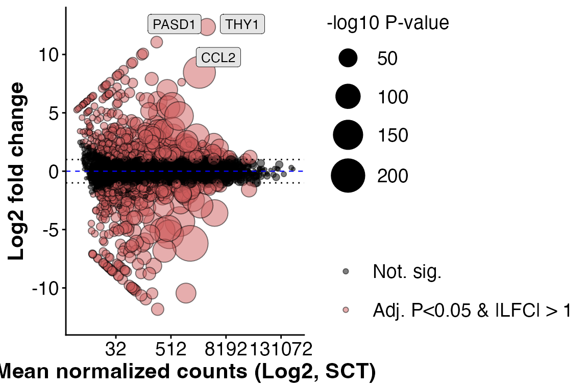
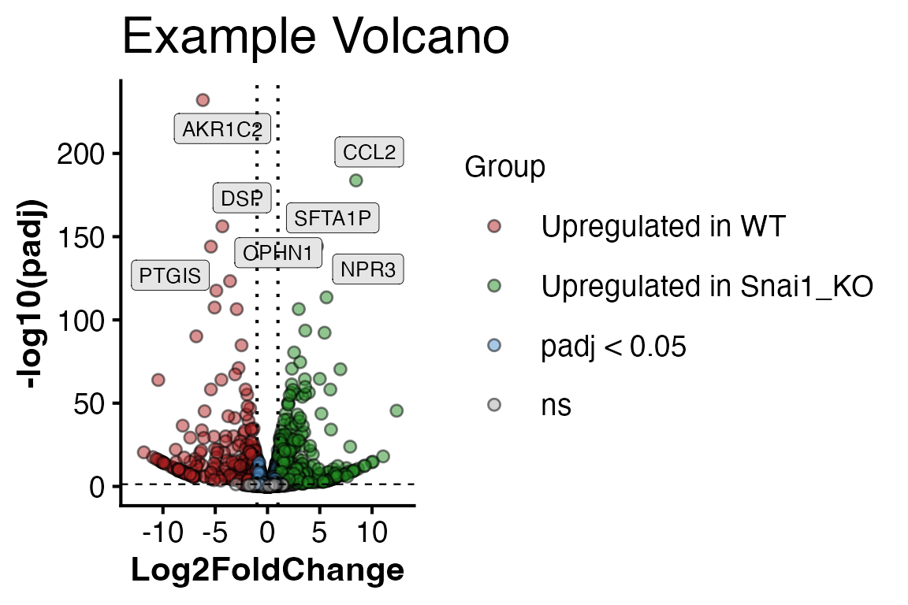

Snail1_Vignette.RmdRGenEDA is designed to provide a streamlined, unified
and reproducible framework for exploratory data analysis across multiple
omics data types. This vignette introduces the key components of the
RGenEDA package using bulk RNA-seq data from the paper Genomewide binding of
transcription factor Snail1 in triple-negative breast cancer cell
(Maturi, et al. 2018). Raw counts and metadata were obtained from The
Gene Expression Atlas under ENA:ERP019920, E-MTAB-5244.
The data has be pre-wrangled but the standard deseq2
framework will be applied here to demonstrate the functionality of
RGenEDA.
The paper explores epithelial cell line HS578T. The authors have introduced a knock-out of the Snail1 transcription factor and compare these with wild-type (WT) HS578T cells.
Data has been included in this package for your convenience. It can
be easily accessed using the following commands. Here, we have one key
variable of interest (Genotype) for simplicity sake (though your
experiment may have many. RGenEDA can handle any number of
covariates.)
# Load the counts and metadata and extract
data("Snail1KO")
counts <- Snail1KO[["rawCounts"]]
metadata <- Snail1KO[["metadata"]]
# Sanity check
head(counts)[1:6, 1:6]
#> ERR1736465 ERR1736466 ERR1736467 ERR1736468 ERR1736469 ERR1736470
#> TSPAN6 434 829 334 779 578 602
#> TNMD 0 0 0 0 0 0
#> DPM1 2202 3461 1627 4241 3676 3946
#> SCYL3 45 72 31 119 69 92
#> C1orf112 320 558 235 516 468 417
#> FGR 0 10 0 0 0 0
head(metadata)
#> Sample Disease Genotype CellLine_CellType
#> ERR1736465 ERR1736465 breast carcinoma WT HS578T - epithelial cell
#> ERR1736466 ERR1736466 breast carcinoma WT HS578T - epithelial cell
#> ERR1736467 ERR1736467 breast carcinoma WT HS578T - epithelial cell
#> ERR1736468 ERR1736468 breast carcinoma Snai1_KO HS578T - epithelial cell
#> ERR1736469 ERR1736469 breast carcinoma Snai1_KO HS578T - epithelial cell
#> ERR1736470 ERR1736470 breast carcinoma Snai1_KO HS578T - epithelial cellIt is helpful to establish color palettes early on in an exploratory
analysis to keep figures consistent. RGenEDA uses the list
of named vectors convention for creating color vectors for plotting
functions.
The standard DESeq2 workflow can now be applied. The end goal is to
obtain normalized counts and differential expression results. Lowly
expressed genes are filtered out before running DESeq2.
# Ensure tables are not scrambled
all(colnames(counts) == rownames(metadata))
#> [1] TRUE
dds <- DESeqDataSetFromMatrix(
countData = counts,
colData = metadata,
design = ~ Genotype
)
#> Warning in DESeqDataSet(se, design = design, ignoreRank): some variables in
#> design formula are characters, converting to factors
# Set reference levels
dds$Genotype <- relevel(dds$Genotype, ref = "WT")
# Pre-filter: keep genes with at least 10 counts in at least 3 samples
keep <- rowSums(counts(dds) >= 10) >= 3
dds <- dds[keep,]
# Run DESeq2
dds <- DESeq(dds)
# Rlog transform the data and extract normalized matrix
rld <- rlog(dds)
mat <- assay(rld)With the normalized counts and metadata prepared, a
GenEDA object can be initialized. This object will store
all components of your analysis, starting with normalized data and
metadata (bare minimum requirements).
# Factor metadata
metadata$Genotype <- factor(metadata$Genotype, levels = c("WT", "Snai1_KO"))
# Initialize GenEDA object with normalized counts and metadata
obj <- GenEDA(
normalized = mat,
metadata = metadata)
# View object summary
obj
#> geneda object
#> features: 11247
#> samples: 6
#> HVGs: 0
#> DimReduction: 0
#> counts: NULL
#> DEGs: NULLYou will see that the object also contains slots for Highly Variable
Genes (HVGs), DimReduction (PCA, etc..) and Differentially Expressed
Genes (DEGs). These will be populated shortly with
RGenEDA
To visualize normalized count distributions across samples, the
PlotCountDist() function can be used. This is a quick and
helpful way to visualize effectiveness of normalization, as the overall
distributions should be similar across samples. Samples with very low or
very high overall counts compared to others might indicate problematic
samples, technical artifacts, or batch effect. This function returns a
ggplot2 object to facilitate any additional
customization.
PlotCountDist(obj, split_by = "Genotype") ## Sample Eucliden distances with hierarchical clustering
To visualize replicate similarity, Euclidean distances between
samples can be calculated and plotted as a pheatmap heatmap
using the PlotDistances() function. Darker colors indicate
higher similarity, while lighter colors represent dissimilar samples.
This provides a quick assessment of replicate quality and metadata
features that drive clustering. To save pheatmap objects
within RGenEDA, we can use the GenSave()
function, which is similar in function to ggsave().
hm <- PlotDistances(
obj,
meta_cols = c("Genotype"),
palettes = colorList,
return = "plot"
)
hm$heatmap
# GenSave(hm, "/path/to/EuclidenDistance_Heatmap.png", width = 6, height = 8) ## Identify highly variable genes
Next, genes are ranked by decreasing variance to find highly variable
genes (HVGs) which most-likely drive biological differences. The full
variance profile curve for all genes profiled with
plotHVGVariance() as a means to pick a meaningful number of
HVGs to retain for calculating principal components in the next
section.
#----- Plot variance profile
PlotHVGVariance(obj)
Based on the curve, 2,000 genes seems sufficient in capturing the
majority of variation. These genes can be extracted and retained in the
HVGs slot with FindVariableFeatures()
#----- Add HVGs to object
obj <- FindVariableFeatures(obj, 2000)
#== Access HVGs (2 methods)
# 1: Accessor function
head(HVGs(obj))
#> [1] "THY1" "CCL2" "SSX1" "AKR1C2" "GPX1" "MYL12B"
# 2: Call the slot directly
#head(obj@HVGs)Using the identified HVGs, principal components can be calculated
using RunPCA() This function stores PCA results in the
DimReduction slot, including:
• $Loadings (sample scores)
• $Eigenvectors (gene contributions)
• $percent_var (Percent variance explained per
component, up to PC5)
If FindVariableFeatures() was not ran beforehand,
RunPCA will calculate HVGs by default with 2000 features.
This argument can be overriden directly using the nfeatures
argument.
obj <- RunPCA(obj)
#> Calculating principal components from top 2000 HVGs
#> Percent variations:
#> PC1 PC2 PC3 PC4 PC5
#> "77.87 %" "11.93 %" "4.52 %" "3.36 %" "2.32 %"
# DimReductions can be accessed with accessor function
# head(DimReduction(obj))
# Inspect PCA outputs
head(obj@DimReduction$Loadings)
#> PC1 PC2 PC3 PC4 PC5 PC6
#> ERR1736465 -5.845179 3.716576 1.620623 -1.0955893 0.1772979 3.594429e-14
#> ERR1736466 -6.433351 -1.186487 0.465169 2.4753119 0.2414526 3.577988e-14
#> ERR1736467 -6.592484 -2.136361 -2.110072 -1.3682232 -0.3897501 3.589042e-14
#> ERR1736468 6.063171 -2.271587 0.822507 -0.6827020 1.7746208 3.570818e-14
#> ERR1736469 6.007254 -1.272494 1.265257 -0.0950531 -1.9236799 3.560521e-14
#> ERR1736470 6.800590 3.150352 -2.063484 0.7662558 0.1200585 3.591129e-14
head(obj@DimReduction$Eigenvectors)
#> PC1 PC2 PC3 PC4 PC5
#> CENPI 0.003588589 -0.02172881 -0.0196200153 -0.015192540 -0.005752305
#> TULP3 0.021586498 -0.02096203 0.0134327078 -0.016091133 0.033236356
#> MAP3K14 0.021846399 0.04358180 -0.0447224066 -0.022827314 -0.064475180
#> AP3D1 0.026800954 0.02836574 -0.0380992712 -0.006296689 0.006278297
#> DIP2B -0.002712758 -0.01559409 -0.0310157471 -0.028917713 0.008953505
#> TAZ 0.003357044 0.01302154 -0.0009023767 -0.003193418 -0.005208482
head(obj@DimReduction$percent_var)
#> PC1 PC2 PC3 PC4 PC5
#> "77.87 %" "11.93 %" "4.52 %" "3.36 %" "2.32 %"PCA results merged with metadata can easily be extracted using
ExtractPCA() which enables flexible plotting. For
convenience, PlotPCA() allows a quick visualization which
can also be further customized with ggplot2.
pcaDF <- ExtractPCA(obj)
head(pcaDF)
#> PC1 PC2 PC3 PC4 PC5 PC6
#> ERR1736465 -5.845179 3.716576 1.620623 -1.0955893 0.1772979 3.594429e-14
#> ERR1736466 -6.433351 -1.186487 0.465169 2.4753119 0.2414526 3.577988e-14
#> ERR1736467 -6.592484 -2.136361 -2.110072 -1.3682232 -0.3897501 3.589042e-14
#> ERR1736468 6.063171 -2.271587 0.822507 -0.6827020 1.7746208 3.570818e-14
#> ERR1736469 6.007254 -1.272494 1.265257 -0.0950531 -1.9236799 3.560521e-14
#> ERR1736470 6.800590 3.150352 -2.063484 0.7662558 0.1200585 3.591129e-14
#> Sample Disease Genotype CellLine_CellType
#> ERR1736465 ERR1736465 breast carcinoma WT HS578T - epithelial cell
#> ERR1736466 ERR1736466 breast carcinoma WT HS578T - epithelial cell
#> ERR1736467 ERR1736467 breast carcinoma WT HS578T - epithelial cell
#> ERR1736468 ERR1736468 breast carcinoma Snai1_KO HS578T - epithelial cell
#> ERR1736469 ERR1736469 breast carcinoma Snai1_KO HS578T - epithelial cell
#> ERR1736470 ERR1736470 breast carcinoma Snai1_KO HS578T - epithelial cell
# Plot PCA
PlotPCA(object = obj,
x = 1,
y = 2,
color_by = "Genotype",
colors = c("WT" = "steelblue3", "Snai1_KO" = "firebrick3"))
#> Warning: `aes_string()` was deprecated in ggplot2 3.0.0.
#> ℹ Please use tidy evaluation idioms with `aes()`.
#> ℹ See also `vignette("ggplot2-in-packages")` for more information.
#> ℹ The deprecated feature was likely used in the RGenEDA package.
#> Please report the issue to the authors.
#> This warning is displayed once every 8 hours.
#> Call `lifecycle::last_lifecycle_warnings()` to see where this warning was
#> generated.
The individual Eigenvectors (genes) that comprise a particular
component of interest can be extracted and their Z-scaled normalized
expression visualized as a heatmap annotated by the percent variation
explained using extractEigen() and
PlotEigenHeatmap(). This can again identify
sample-to-sample differences.
pc1_eigen <- extractEigen(object = obj,
component = "PC1")
head(pc1_eigen)
#> Gene EigenVector PctVar
#> 1 CENPI 0.003588589 0.0012877974
#> 2 TULP3 0.021586498 0.0465976905
#> 3 MAP3K14 0.021846399 0.0477265145
#> 4 AP3D1 0.026800954 0.0718291147
#> 5 DIP2B -0.002712758 0.0007359055
#> 6 TAZ 0.003357044 0.0011269741
hm2 <- PlotEigenHeatmap(obj,
pc = "PC1",
n = 25,
annotate_by = "Genotype",
annotate_colors = colorList)
hm2$heatmap
# GenSave(hm2, "/path/to/EuclidenDistance_Heatmap.png", width = 6, height = 8)To interpret principal components, individual PCs can be correlated
with sample metadata using PlotEigenCorr(). This function
computes Pearson correlations and displays them as a heatmap, helping to
reveal which metadata features are most associated with major axes of
variation. This function returns a list of 4 elements:
• $cor_matrix (Pearson correlation values)
• $pval_matrix (Associated correlation p-values)
• $stars (asterisk representations of p-values)
• $plot (Eigencorr plot, as a ggplot2
object, which can be saved with ggsave)
Note: PlotOrdCorr() can be used for
microbiome data as it correlates metadata features with NMDS beta values
rather than PCs.
ec <- PlotEigenCorr(obj, num_pcs = 5)
#> Warning in cor(x, y): the standard deviation is zero
#> Warning in cor(x, y): the standard deviation is zero
#> Warning in cor(x, y): the standard deviation is zero
#> Warning in cor(x, y): the standard deviation is zero
#> Warning in cor(x, y): the standard deviation is zero
#> Warning in cor(x, y): the standard deviation is zero
#> Warning in cor(x, y): the standard deviation is zero
#> Warning in cor(x, y): the standard deviation is zero
#> Warning in cor(x, y): the standard deviation is zero
#> Warning in cor(x, y): the standard deviation is zero
ec$plot ## Explore DEGs
Differentially expressed genes can now be stored in the
RGenEDA object. RGenEDA was designed to
directly work with DEG tables derived from DESeq2 and
contain the column names “baseMean”, “log2FoldChange” and “padj”. DEG
tables from other packages can be used with some minor dataframe
manipulation.
Note: multiple DEG assays can be appended to the DEGs slot by passing
an assay name in the SetDEGs() command (for example, raw
DESeq2 results and Shrunk DESeq2 results.)
DEG assays can be filterd and directly saved as a new assay in the
DEGs slot using FilterDEGs()
res <- results(dds) |>
as.data.frame()
# Set a new DEG assay
obj <- SetDEGs(object = obj,
deg_table = res,
assay = "unfiltered")
# Filter the DEG assay and save as a new one
obj <- FilterDEGs(object = obj,
assay = "unfiltered",
padj_thresh = 0.05,
log2FC_thresh = 1,
saveAssay = "padj05_lfc1")
# Grab results with accessor function
nrow(DEGs(object = obj, assay = "unfiltered"))
#> [1] 11247
nrow(DEGs(object = obj, assay = "padj05_lfc1"))
#> [1] 1198Basic DEG visualizations plots such as MA plots and volcano plots can
be plotted using PlotMA() and PlotVolcano()
“Num” and “Den” arguments refer to numerator level and denominator level
(reference level of experiment, in our case, “WT”)
PlotMA(obj,
assay = "unfiltered",
alpha = 0.05,
fc = 1)
#> Warning: Using `size` aesthetic for lines was deprecated in ggplot2 3.4.0.
#> ℹ Please use `linewidth` instead.
#> ℹ The deprecated feature was likely used in the RGenEDA package.
#> Please report the issue to the authors.
#> This warning is displayed once every 8 hours.
#> Call `lifecycle::last_lifecycle_warnings()` to see where this warning was
#> generated.
#> Scale for size is already present.
#> Adding another scale for size, which will replace the existing scale.
#> Warning: Removed 5 rows containing missing values or values outside the scale range
#> (`geom_point()`).
#> Warning: ggrepel: 653 unlabeled data points (too many overlaps). Consider
#> increasing max.overlaps
#> Warning: ggrepel: 542 unlabeled data points (too many overlaps). Consider
#> increasing max.overlaps
Or a volcano plot by specifying numerator and denominator (denominator is your comparison reference level).
PlotVolcano(obj,
assay = "unfiltered",
alpha = 0.05,
fc = 1,
den = "WT",
num = "Snai1_KO",
title = "Example Volcano")
#> Warning: ggrepel: 653 unlabeled data points (too many overlaps). Consider
#> increasing max.overlaps
#> Warning: ggrepel: 538 unlabeled data points (too many overlaps). Consider
#> increasing max.overlaps
To explore whether a differentially expressed gene (DEG) is also a
highly variable gene (HVG), the intersect of these two vectors can be
taken to obtain highly variable DEGs (hvDEGs), which can be useful for
applications such as gene-set variation analysis (GSVA). To obtain this,
the FindHVDEGs() function can be used. The direction of
fold change to intersect with HVGs can be either “positive”, or
“negative”, which returns a vector of genes, or “both” which contains a
list with $positive, $negative, and
$both slots.
FindHVDEGs(obj,
assay = "padj05_lfc1",
direction = "negative")
#> 332 -log2FC hvDEGs found.
#> [1] "CAMKK1" "ACSM3" "TMEM98" "DLX6" "MAP3K9"
#> [6] "PRSS21" "FUZ" "CEP68" "ERCC1" "BID"
#> [11] "ABCC2" "DEF6" "LRRC7" "VCAN" "SPATA7"
#> [16] "CAPG" "MPC1" "GUCY1B1" "EYA2" "ANKRD44"
#> [21] "PRKCQ" "MTHFD2" "TRO" "NAV3" "MAST4"
#> [26] "GAL" "CLTCL1" "DGCR2" "MGAT4A" "VASH1"
#> [31] "ST6GAL1" "ZNF532" "TUBE1" "MLH1" "ARHGEF1"
#> [36] "SLC1A3" "OPHN1" "CARMIL1" "IGSF9B" "CXCL2"
#> [41] "MMP2" "TESC" "DLL3" "DSP" "SYDE2"
#> [46] "PCSK5" "TRMT2A" "SMARCB1" "PPM1F" "SRRD"
#> [51] "SEPTIN3" "SYNGR1" "PCK2" "BMP7" "ISM1"
#> [56] "TRIB3" "FERMT1" "ZNF516" "KLHL4" "CPPED1"
#> [61] "FZD3" "JPH1" "GDAP1" "TUBB4A" "FCGRT"
#> [66] "NOVA2" "OLFM2" "TIMM50" "DMAC2" "CARD8"
#> [71] "TMEM59L" "SCN1B" "CADM4" "PTN" "GIMAP2"
#> [76] "TRIM14" "KANK1" "COL1A1" "CLEC2B" "PARP11"
#> [81] "VDR" "ADGRD1" "PHC1" "SOBP" "PHACTR2"
#> [86] "SEMA5A" "GHR" "PCDHB5" "PCDHB6" "CDH6"
#> [91] "SLC12A7" "EHHADH" "PODXL2" "ARHGEF26" "EFEMP1"
#> [96] "IL18R1" "ID2" "NOL10" "SLC25A12" "SDC1"
#> [101] "ORC4" "PAPPA2" "RHOU" "CTH" "AGMAT"
#> [106] "ADGRL2" "IFT46" "MREG" "UBE3D" "TGIF2"
#> [111] "ABCG2" "LGALSL" "BCL11A" "PCDHB12" "RDH10"
#> [116] "PDZRN3" "KIAA1549" "BAZ2B" "PFKFB2" "DAW1"
#> [121] "PTGIS" "SNAI1" "ZNF576" "BMP4" "EML2"
#> [126] "TMX4" "ID1" "SSX1" "GNAZ" "PODXL"
#> [131] "CHAC1" "KIF1A" "AFDN" "ZNF227" "THOC6"
#> [136] "PER2" "TTC9" "PSAT1" "MSI1" "ACVR1B"
#> [141] "OS9" "MAP7" "NHSL1" "NIBAN1" "EDNRB"
#> [146] "GATA4" "CTSV" "KIAA0319" "FLOT1" "SULF1"
#> [151] "FXYD6" "GPAT3" "BMPR1B" "LEF1" "CLSTN3"
#> [156] "INHBE" "RAB15" "STON2" "NUDT7" "CDH13"
#> [161] "GAREM1" "TTYH2" "IGFBP4" "GEMIN7" "WTIP"
#> [166] "CRABP2" "ETNK2" "ALDH1L1" "OTULINL" "TNFAIP8"
#> [171] "FAXC" "SDK1" "ZNF214" "NCAM1" "FEZ1"
#> [176] "MPP7" "CDH8" "IL18" "AKR1C2" "TDO2"
#> [181] "SPOCK1" "PRDM8" "BMP6" "PTPRD" "KCTD15"
#> [186] "ANKFN1" "KIF5A" "TSPAN7" "CD109" "MMP14"
#> [191] "ARSL" "TMSB15A" "TSPAN33" "ZNF208" "FAM171A2"
#> [196] "PDPN" "CADM3" "EIF4E3" "RPL22L1" "HHIP"
#> [201] "TBX20" "STEAP1" "ELAPOR2" "ZNF704" "CHMP4C"
#> [206] "ADCY1" "SLC16A9" "PKNOX2" "JCAD" "JAM3"
#> [211] "STXBP4" "PPFIBP2" "CYB5R2" "PRTG" "RIMKLB"
#> [216] "NNMT" "GPRC5B" "OR51B5" "OR51I1" "CYP2S1"
#> [221] "NXN" "DDIT4" "COA6" "ZNF30" "STXBP6"
#> [226] "CXCL8" "ZFPM2" "SMAD1" "KRT8" "HOXB9"
#> [231] "CHD7" "LURAP1" "DLK2" "LRRC34" "CYP4F11"
#> [236] "TLN2" "ZNF556" "CALB2" "SLCO2A1" "BRSK2"
#> [241] "NUPR1" "OR51B6" "EID2" "EID2B" "SYNE3"
#> [246] "NCKAP5" "MAGEF1" "SOX12" "HNRNPA0" "AP3S1"
#> [251] "ZNF223" "ARL14" "NLRP11" "F2R" "ZNF322"
#> [256] "OR52D1" "FDX1P1" "PLCB1" "CADM1" "OR51B4"
#> [261] "TMEM121B" "SCN5A" "THAP7" "OR51M1" "SLC24A3"
#> [266] "MRPL40" "PRAME" "KCNQ5" "KRT10" "ZNF397"
#> [271] "AKR1C1" "ZKSCAN4" "ZNF70" "PABIR1" "OR51I2"
#> [276] "FAM78B" "ZFP92" "AKR1C3" "PPP1R26" "POTEF"
#> [281] "TCF4" "ZNF512B" "MVB12B" "ZSCAN26" "STMN3"
#> [286] "COL13A1" "TUBA3C" "MDM4" "FAM169A" "ZNF830"
#> [291] "SCAMP5" "ZNF521" "SFMBT2" "DZIP3" "OR2L2"
#> [296] "GPANK1" "MRPS18B" "PRR3" "TMEM200C" "GPSM3"
#> [301] "EMP2" "RTL10" "RABGAP1L-IT1" "RFPL4A" "SNHG14"
#> [306] "APCDD1L-DT" "YWHAEP1" "RNASEH1-AS1" "ZSCAN31" "FOXD2-AS1"
#> [311] "POU5F1P4" "PRKCQ-AS1" "GUSBP2" "PEG10" "N4BP2L2"
#> [316] "LINC00504" "RBBP4P1" "CHCHD10" "PCDHB17P" "PECAM1"
#> [321] "GNAO1-AS1" "SH3GL1P1" "LIN37" "NCBP2AS2" "CAHM"
#> [326] "ZNF595" "FAM106A" "H2BC3" "H2AC16" "H4C1"
#> [331] "OR51B2" "H3C3"